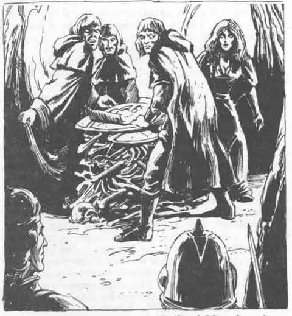

剑魂 · Swordwraith
剑魂 Swordwraith

（斯塔克丘陵亡灵精魂）
| 项目 | 数据 |
|---|---|
| 气候／地形 | 所有陆地环境（古老战场） |
| 出现频率 | 罕见 |
| 组织 | 军事单位 |
| 活动时间 | 夜晚 |
| 食性 | 无 |
| 智力 | 平均（8–10） |
| 宝物 | 零星 |
| 阵营 | 守序邪恶 |
| 反应调整值 | +3 |
| 出现数量 | 2–8 |
| 护甲等级 | 3 |
| 移动 | 9” |
| 生命骰 | 7 |
| THAC0 | 10 |
| 攻击次数 | 3／2（按 F7） |
| 每次攻击伤害 | 1–10 |
| 特殊攻击 | 力量吸取 |
| 特殊防御 | 需要 +2 或更高武器才能命中 |
| 魔法抗性 | 无 |
| 体型 | 中型（高 6 英尺） |
| 士气 | 狂热（20） |
| 经验值 | 1000 + 5／hp |
剑魂是那些在战斗最激烈时被砍倒的战士之魂，它们凭借自己不可摧毁的意志，避免了死亡带来的消散。
外貌：剑魂只在夜间，或在阳光永远照不到的地下出现。它们看起来像身穿铠甲、装备着各种战争武器的战士。虽然铠甲和武器并不起眼，但其中的肉体却显得虚无缥缈。在某些光线条件下，能看到的只有头盔阴影中两只发光的眼睛。剑魂散发着霉菌和腐烂的恶臭，但气味来自它们的铠甲和武器，而非生物本身。它们周围环绕着强烈寒冷的气场，令人不适，但不足以造成伤害。
战斗：剑魂生前是久经战阵的战士，即使成为亡灵，它们仍保留着战略和战术知识：它们以教科书般的精准度进行小单位交战，准确知道何时进攻、让出阵地以及反击。它们拥有智慧，会说人类的通用语，因此可能接受谈判……但前提是提出谈判者必须被它们视为军事上的同等对手。
剑魂像普通战士那样使用各种武器进行攻击。无论使用什么武器，伤害都相同：1–10 点生命值。每次命中还会吸取受害者 1 点力量。如果受害者的力量降至 0，就会死亡。被剑魂攻击失去的力量只能通过完全休息（每完全不活动一天恢复 1 点），或通过祈愿术、有限祈愿术或同等强力的魔法恢复。
剑魂只有被 +2 或更高的武器才能伤害。它们完全免疫睡眠、魅惑和其他影响心智的魔法。它们按吸血鬼处理以进行驱散。
栖息地／社会：剑魂曾经是职业士兵：军官、佣兵，或者其他把战斗视为人生全部的人。虽然它们死在战场上，但它们的意志如此强烈，以至于无法放下暴力死亡这一行当。在许多情况下，它们固执到连自己也不肯承认自己其实已经死了。剑魂完全拥有自由意志，并不觉得自己与其他亡灵有任何亲缘关系（事实上，它们憎恨大多数其他亡灵所表现出的“无意识的缺乏纪律”）。
这些生物只在夜间活动，或在阳光无法到达的地下活动。它们的尸体通常被埋在古坟或墓丘中。白昼期间，进入这类古坟的入侵者可能会遇到正在准备夜间活动的剑魂。
剑魂聚集成小型单位和战争议会，计划并执行针对战场安息地附近聚落的午夜突袭。它们也很可能攻击任何不明智地在其领地内过夜的旅行队（它们阵营中的“守序”部分，指的是对团体内部、对其他剑魂的忠诚，而不是对任何其他人的忠诚）。突袭的结果不会让剑魂收集战利品，也不会让它们占领任何被征服的领土。它们战斗，是因为它们只知道战斗。
如果剑魂有一句自己“奉行”的信条，那大概就是：“佣兵不会死；他们只是去哈迪斯重新集结。”它们说人类的通用语。
剑魂在斯塔克丘陵地区十分常见——这可能是古代杰弗与斯特里奇之间，或两地先祖之间领土战争的结果——但在任何拥有古老战场和战争墓地的地区都能发现它们。
生态位：剑魂不消耗任何东西，也不生产任何东西。它们唯一的受害者，是误入其领地的旅行者以及附近聚落中的居民。